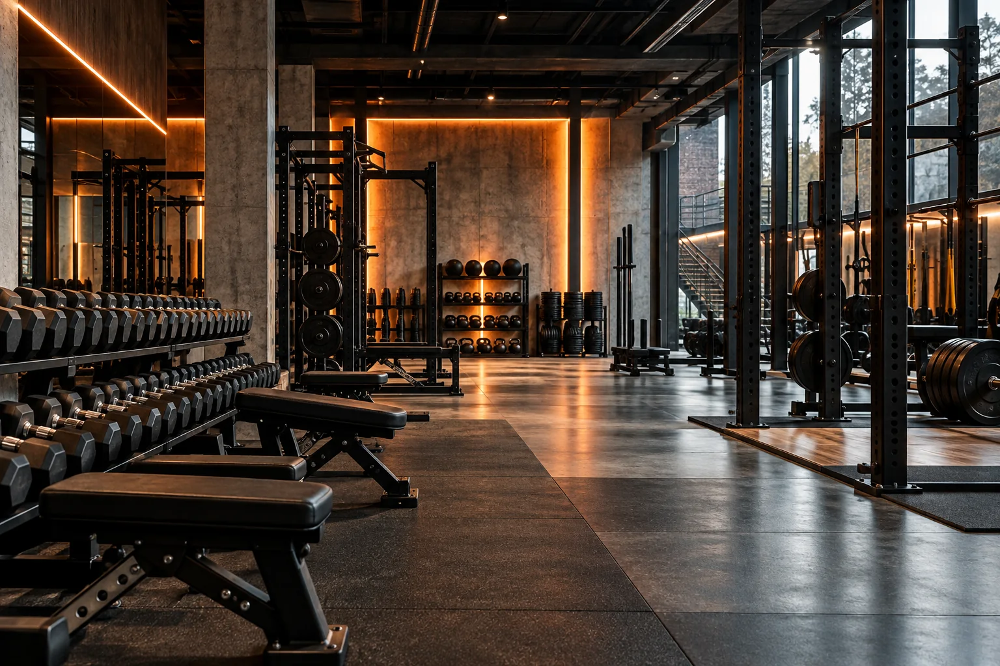
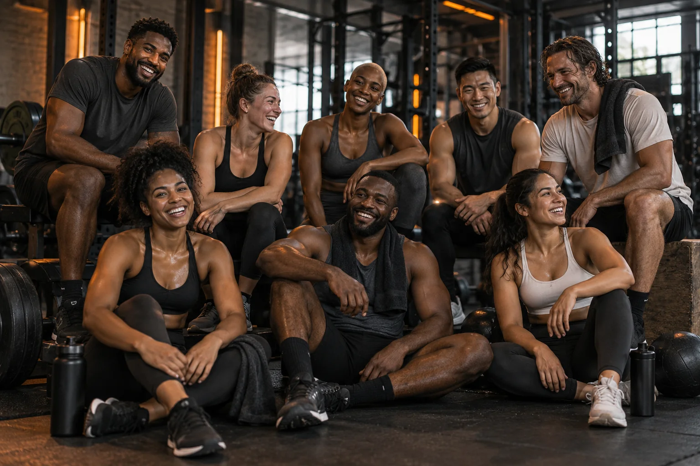

POINT DE DÉPART
Votre expérience, vos disponibilités et les mouvements que vous connaissez.
IRON DISTRICT / PROGRAMMES
La bonne séance commence par un objectif clair.
EXPLORER ↓01 / LA MÉTHODE
Exemples informatifs. Aucun programme médical ni prescription individuelle.
Votre expérience, vos disponibilités et les mouvements que vous connaissez.
Une organisation réaliste qui laisse de la place à la récupération.
Des repères de progression discutés avec votre coach.

IRON DISTRICT / TRAINING CULTURE02 / MUSCULATION
Des bases solides, une exécution précise et une progression mesurée. Les séances sont adaptées après un échange sur votre niveau, vos préférences et votre disponibilité.
EXPLORER LES CRÉNEAUX IRON DISTRICT / TRAINING CULTURE
IRON DISTRICT / TRAINING CULTURE03 / FORCE ATHLÉTIQUE
Apprendre à déplacer la charge avec contrôle et intention. Les séances sont adaptées après un échange sur votre niveau, vos préférences et votre disponibilité.
EXPLORER LES CRÉNEAUX04 / CARDIO
Construire son souffle et trouver un rythme durable. Les séances sont adaptées après un échange sur votre niveau, vos préférences et votre disponibilité.
EXPLORER LES CRÉNEAUX05 / FUNCTIONAL TRAINING
Des mouvements complets pour une force utile au quotidien. Les séances sont adaptées après un échange sur votre niveau, vos préférences et votre disponibilité.
EXPLORER LES CRÉNEAUX06 / HIIT
Des efforts courts, des récupérations organisées, un défi adapté. Les séances sont adaptées après un échange sur votre niveau, vos préférences et votre disponibilité.
EXPLORER LES CRÉNEAUX07 / MOBILITÉ
Développer son amplitude et la qualité de ses mouvements. Les séances sont adaptées après un échange sur votre niveau, vos préférences et votre disponibilité.
EXPLORER LES CRÉNEAUX
IRON DISTRICT / TRAINING CULTURE08 / COURS COLLECTIFS
Une énergie partagée, dans un cadre encadré. Les séances sont adaptées après un échange sur votre niveau, vos préférences et votre disponibilité.
EXPLORER LES CRÉNEAUX09 / COACHING PERSONNEL
Un regard extérieur pour faire évoluer sa pratique. Les séances sont adaptées après un échange sur votre niveau, vos préférences et votre disponibilité.
EXPLORER LES CRÉNEAUX10 / START SMART
Prendre le temps de comprendre la technique et les réglages.
Répéter une structure simple et suivre sa régularité.
Ajuster les charges, le volume et la difficulté avec un coach.
11 / QUESTIONS
Oui. Le parcours découverte présente les espaces, les réglages et les repères de sécurité. L’intensité est ajustée avec le coach.
Les formules, disponibilités, coachs et demandes sont fictifs. Rien n’est envoyé à une salle et aucun paiement n’est réalisé.
Une tenue confortable, des chaussures propres, une serviette et de l’eau. Les conditions définitives seront précisées par l’exploitant.
Vous pouvez revenir aux étapes précédentes avant de confirmer. Après confirmation, démarrez une nouvelle simulation si nécessaire.